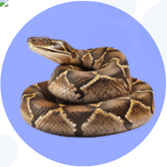

Píton Real
Alimentação
Camundongos ou ratos (de acordo com o tamanho). Alimentação semanal ou quinzenal.
Cuidados
Evitar estresse, manter temperatura adequada (26-32°C), substrato limpo.
Habitat
Terrário com esconderijos, temperatura controlada, umidade entre 50%-60%.
Doenças Comuns
Infecções respiratórias, parasitas externos.
Alimentos Proibidos
Alimentos vivos não supervisionados, carnes cruas de açougue.
Alimentos Indicados
Camundongos e ratos congelados.
Manejo
Ambiente estável, sem excesso de manipulação, observação após alimentação.